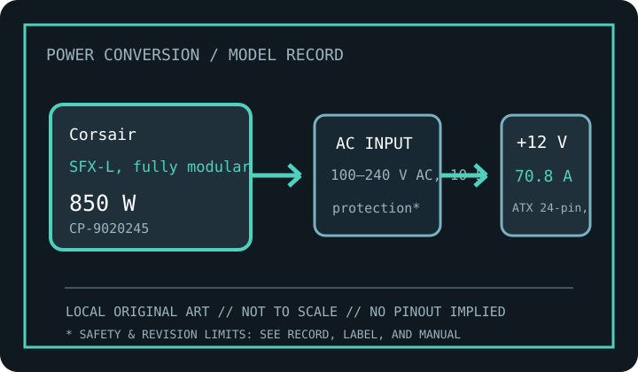

[ SFX / TFX / FLEX-ATX EXACT MODELS // IDENTIFIED UNIT ]
Corsair SF850L
Exact model record for Corsair identifier CP-9020245. Published ratings below are a model-family reference, not a substitute for the individual unit’s rating label and revision documentation.

SAFETY: Never open a PSU or probe its interior. Dangerous voltage can remain after unplugging; if damaged, wet, noisy, burned, or unstable, disconnect it and replace it with a verified compatible unit. For server hot-plug models, use only the host service procedure and confirm redundancy before removal.
Recorded model specifications
| Exact catalog identifier | Corsair CP-9020245. Match all suffixes, assembly and revision markings on the actual label. |
|---|---|
| Form / rated output | SFX-L, fully modular; manufacturer-rated total continuous output class: 850 W. Peak/transient capacity, temperature derating, and combined-rail limits remain specification-revision dependent. |
| AC input rating | 100–240 V AC, 10–5 A, 47–63 Hz. Region, temperature, and load may change the nameplate current; use the unit's own label for installation. |
| DC rail reference | Main +12 V rail: 70.8 A (850 W class). +3.3 V / +5 V: +3.3 V 20 A, +5 V 20 A; combined 100 W. Actual combined limits and auxiliary/standby outputs must be checked on the model-specific output table. |
| Connectors / system interface | ATX 24-pin, EPS12V, PCIe 6+2-pin and 12VHPWR; Corsair Type 4 modular cables. |
| Mechanical envelope | 125 × 63.5 × 130 mm (width × height × depth where applicable). Check manufacturer's mounting drawing, screw locations, grille/fan clearance, cable bend radius, and chassis tolerances; never use nominal dimensions alone to force-fit a unit. |
| Standards / revision caveat | 80 PLUS Gold; ATX 3.0 / PCIe 5.0 family; SFX-L dimension, not SFX. Connector standards, efficiency certification, and mechanical form factor are different things. ATX, ATX12V, SFX, TFX, Flex ATX, and OEM interfaces are not interchangeable merely because they fit. |
Replacement & compatibility
- Read exact manufacturer model/SKU, DC output table, AC input, hardware revision, date code, and applicable service manual from the physical unit. The same family name can cover materially different revisions.
- For ATX-family units, confirm motherboard/EPS/PCIe connector count and pinout, total and per-rail limits, chassis size, clearances, and GPU transient/cable requirements. For proprietary OEM units, match the exact machine type, FRU/assembly number, keyed connector and service documentation.
- Use only modular cables explicitly qualified for this exact PSU model and revision. Modular PSU-side pinouts are not standardized; never transfer cables from a different supply based only on physical fit.
- Never use an unverified pin adapter to bridge proprietary pinouts. Replacing a PSU cannot correct a damaged motherboard, shorted load, or unsuitable mains circuit.
Revision and documentation notes
SFX-L is longer than SFX; verify chassis depth and Type 5 cable compatibility. Newer SF850 is a different model. Ratings shown are the source-backed nominal model reference; manufacturer documentation can change with regional SKU, revision, certification listing, or replacement part. Confirm all figures against the exact source manual and the PSU label before purchasing or servicing. AC/DC figures on this archive do not describe internal topology or guarantee used-unit condition.
Sources & further reading
- Manufacturer or model reference: Corsair SF850L (CP-9020245)Primary product/manual listing for the named model; verify that its exact suffix matches this record and the unit label.
- Intel ATX desktop power supply design guide (where ATX applies)Standards context only; does not certify this SKU or apply to proprietary server/legacy interfaces.
- Corsair modular-cable compatibility chart (illustrative; use the named PSU maker’s exact list)Illustrates manufacturer-specific PSU cable rules; use the named PSU brand's exact compatibility list.
Specifications here are not a substitute for the manufacturer’s model-specific manual, label, chassis service guide, or electrical safety regulations. Where a generic family webpage conflicts with the exact unit label/manual, the label and specific manual control.